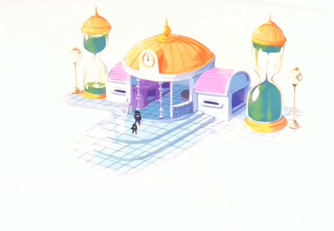
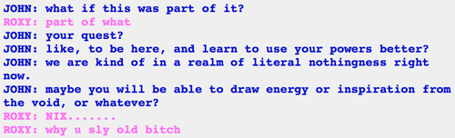
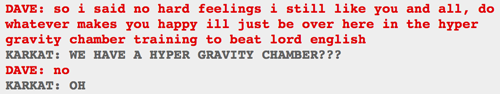

SON OF A BITCH, I only JUST NOW got this
Giant blank space? Time is stopped for as long as they want? Roxy training to use her powers better?
It’s Dragon Ball Z’s FUCKING Hyperbolic Time Chamber. And you know Andrew did it intentionally because of that reference to it Dave made earlier (pic above). FUCK.
This parallel only just occurred to me but I’m sure a lot of you thought of it first and are laughing your asses off right now.
EDIT: hextrudedcubes said:
also, with these past 2 updates, MSPA pages are, well, e%ceeding a certain number in quantity
Are you KIDDING me
He saved the hyperbolic time chamber for right when the comic went over p=009000, god FUCKING DAMMIT
And for that matter there’s another “hyperbolic time chamber“ reference that Hussie’s made recently.
Ah right, he did the writing on that one! “Hyperbolic Playtime Chamber”… I had a feeling there was one I was missing, dammit, that explains it.
Hello yes I am a DBZ nerd and the hyper gravity chamber and the hyperbolic time chamber were two very different things. The gravity chamber was basically just a room existing in regular time with a machine that controlled gravity, and the time chamber was basically a different dimension that had slightly higher gravity but the most important thing was that one year in it=one day in the real world.
Not to say it’s not a reference, just that Dave’s reference and this reference would be to two different things. Of course Dave’s reference could just be enough to bring up DBZ period but I am a nerdy pedant.